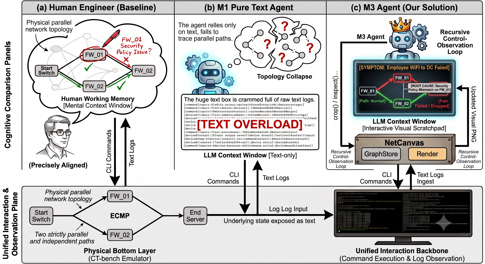
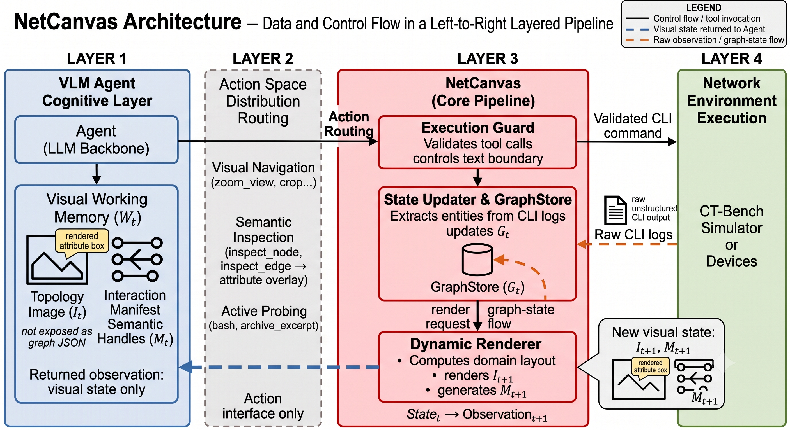
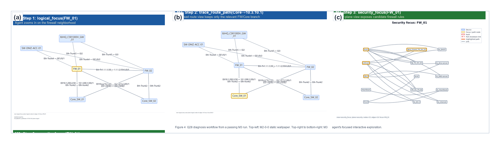
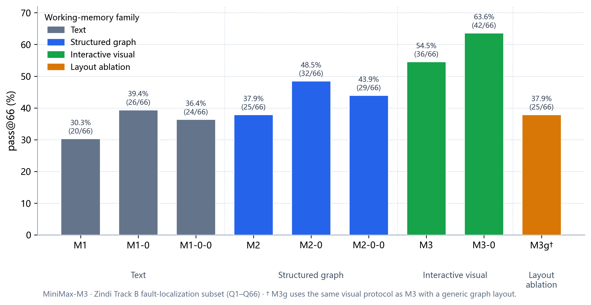
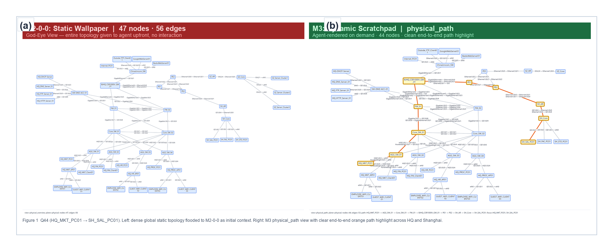

Topology amnesia
Cross-device IP fault localization needs a stable spatial map. Mainstream LLM agents keep CLI output in textual context, so adjacency, path forks, and regional hierarchy must be rebuilt from scattered logs at every hop. We call this failure mode topology amnesia.

NetCanvas
NetCanvas is an interactive visual runtime that maintains Interactive Visual Working Memory—topology images that update with probing. The agent navigates this view on demand (zoom, path highlight, attribute inspection) instead of re-deriving structure from raw CLI text.

Probe → Ingest → Render → Act
- Probe — run CLI on devices / simulator.
- Ingest — parse observations into a growing graph state Gt.
- Render — project a domain-aligned topology image plus Manifest handles.
- Act — reason over the visual working memory and choose the next tool call.

Results on CTBench
Evaluated on the 66-question fault localization subset of CTBench, without preloading the physical topology unless noted.
With physical topology preload, the interactive visual chain further reaches 63.6%, and uses fewer average probing steps than text-only / structured-graph baselines. The advantage also persists under an additional multimodal LLM backbone.

What drives the gains
Ablations attribute the benefit to two design choices:
- Probe-synchronized interactive views beat one-shot static global snapshots.
- Domain-aligned layouts beat generic force-directed layouts.

Cite this work
@misc{netcanvas2026,
title = {{NetCanvas}: Interactive Visual Working Memory for LLM-Based IP Network Fault Localization},
author = {Cai, Manjing and Wu, Chenwei and You, Qiheng and Sun, Weijian and Chen, Xin},
year = {2026},
month = {aug},
day = {10},
url = {https://caimanjing.github.io/netcanvas/}
}Project page URL is set to https://caimanjing.github.io/netcanvas/. Update Paper/arXiv/Code links and the BibTeX date after public release. During double-blind review, keep the page anonymous or unpublished if required.